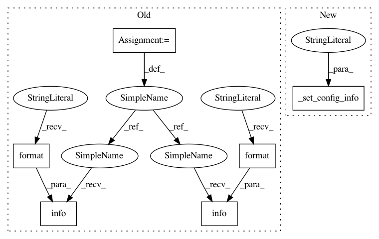

908c0c630a6c7c6e35b7bb0e172d41372bfb309d,python/ray/autoscaler/aws/config.py,,_configure_iam_role,#Any#,95
Before Change
profile = _get_instance_profile(DEFAULT_RAY_INSTANCE_PROFILE, config)
if profile is None:
logger.info("_configure_iam_role: "
"Creating new instance profile {}".format(
DEFAULT_RAY_INSTANCE_PROFILE))
client = _client("iam", config)
client.create_instance_profile(
InstanceProfileName=DEFAULT_RAY_INSTANCE_PROFILE)
profile = _get_instance_profile(DEFAULT_RAY_INSTANCE_PROFILE, config)
time.sleep(15) // wait for propagation
assert profile is not None, "Failed to create instance profile"
if not profile.roles:
role = _get_role(DEFAULT_RAY_IAM_ROLE, config)
if role is None:
logger.info("_configure_iam_role: "
"Creating new role {}".format(DEFAULT_RAY_IAM_ROLE))
iam = _resource("iam", config)
iam.create_role(
RoleName=DEFAULT_RAY_IAM_ROLE,
AssumeRolePolicyDocument=json.dumps({
After Change
def _configure_iam_role(config):
if "IamInstanceProfile" in config["head_node"]:
_set_config_info(head_instance_profile_src="config")
return config
_set_config_info(head_instance_profile_src="default")
profile = _get_instance_profile(DEFAULT_RAY_INSTANCE_PROFILE, config)
In pattern: SUPERPATTERN
Frequency: 4
Non-data size: 6
Instances
Project Name: ray-project/ray
Commit Name: 908c0c630a6c7c6e35b7bb0e172d41372bfb309d
Time: 2020-07-22
Author: maximsmol@gmail.com
File Name: python/ray/autoscaler/aws/config.py
Class Name:
Method Name: _configure_iam_role
Project Name: ray-project/ray
Commit Name: 908c0c630a6c7c6e35b7bb0e172d41372bfb309d
Time: 2020-07-22
Author: maximsmol@gmail.com
File Name: python/ray/autoscaler/aws/config.py
Class Name:
Method Name: _configure_subnet
Project Name: ray-project/ray
Commit Name: 908c0c630a6c7c6e35b7bb0e172d41372bfb309d
Time: 2020-07-22
Author: maximsmol@gmail.com
File Name: python/ray/autoscaler/aws/config.py
Class Name:
Method Name: _check_ami
Project Name: ray-project/ray
Commit Name: 908c0c630a6c7c6e35b7bb0e172d41372bfb309d
Time: 2020-07-22
Author: maximsmol@gmail.com
File Name: python/ray/autoscaler/aws/config.py
Class Name:
Method Name: _configure_key_pair
Project Name: ray-project/ray
Commit Name: 908c0c630a6c7c6e35b7bb0e172d41372bfb309d
Time: 2020-07-22
Author: maximsmol@gmail.com
File Name: python/ray/autoscaler/aws/config.py
Class Name:
Method Name: _configure_iam_role